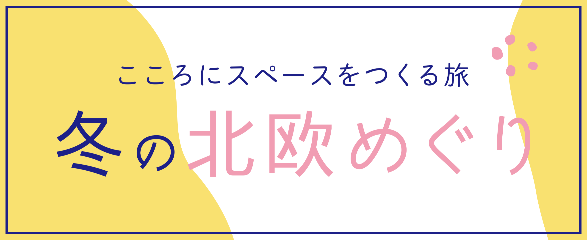
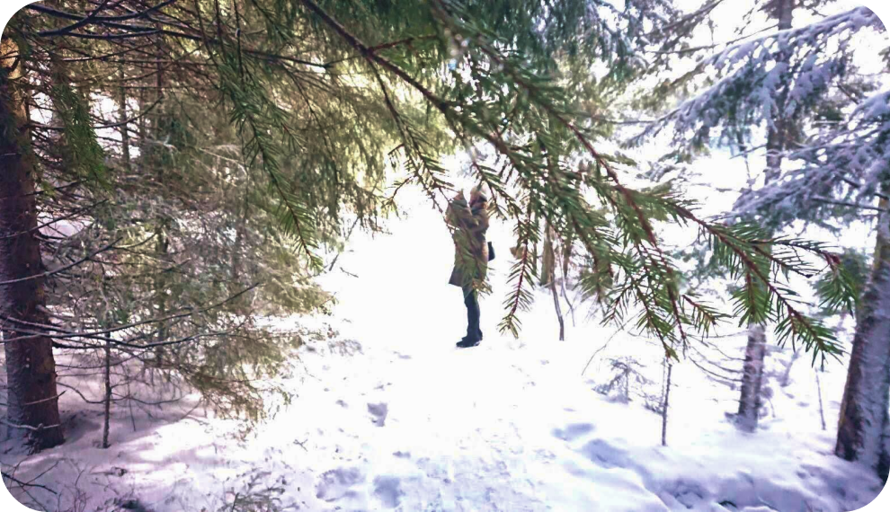
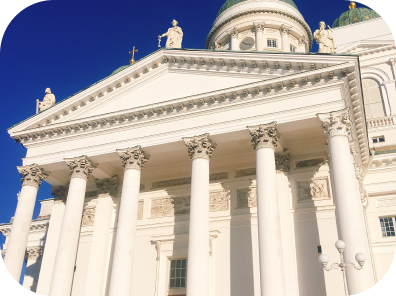
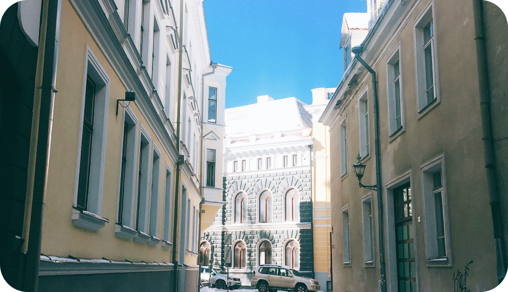
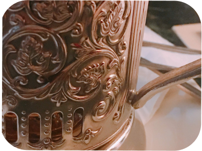
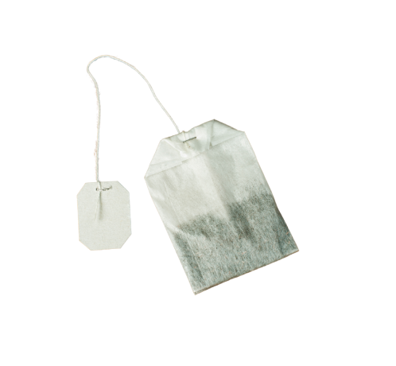
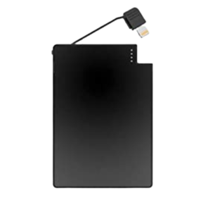
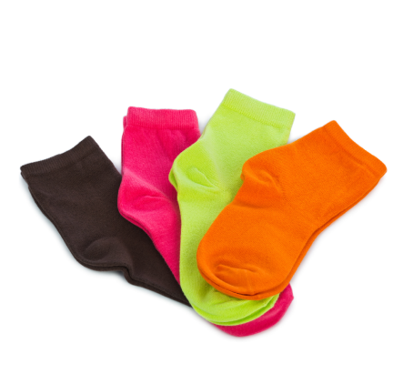
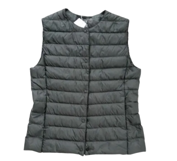

Finland
オフシーズン、氷点下10度の日が続く土地。
森に出かけて自然の厳しさを味わったら、
暖かく心地よいインテリアに囲まれて、
穏やかな時間をすごそう。


DAY1
森へ。ミクロな冬の景色
他国の寿司に挑戦
DAY2
アアルト探索
Estonia / Tarin
なんでも手に入る時代に、
見たことがないものを見つけられる街へ。
絵本の中のような街の中、アートなスポットとレアなお土産発見ができる。


DAY3
お隣の国、エストニアへ
絵本のような街並みでペンギンになる
アイコニックを探して
持っていって良かったもの
1

2

3

4

- 1パックの緑茶
- 普段から慣れ親しんだ味のお茶を持つと、たった数日でも意外と心の拠り所になる。
- 2サブチャージャー
- メインの充電器とは別に、薄型充電器も持っていこう。カバンの中でも邪魔にならない。
- 3くつした
- 寒さ対策で２枚ばきは必須だ。雪で足がべちゃべちゃになるので何回でも履き替えたくなるはず。
- 4ウルトラライトダウン
- 寒さ対策は必須だけど、長袖を重ねるとモコモコして格好悪いので、ベストは重宝する。なんと言っても軽いのがBest
冬の北欧めぐり
日本から最も近いヨーロッパ、北欧。
初めて訪ねた2週間はシーズンオフでマイナス10度が続く日でした。
初めて訪ねる国なのに（寒いのに！）あたたかい雰囲気に包まれ不思議な気持ちになりました。
あの日できごとのかけらを、日記のように残しておこうと思い、ラフな言葉でこのページを作りました。
ひとり旅へのきっかけになれば幸いです。